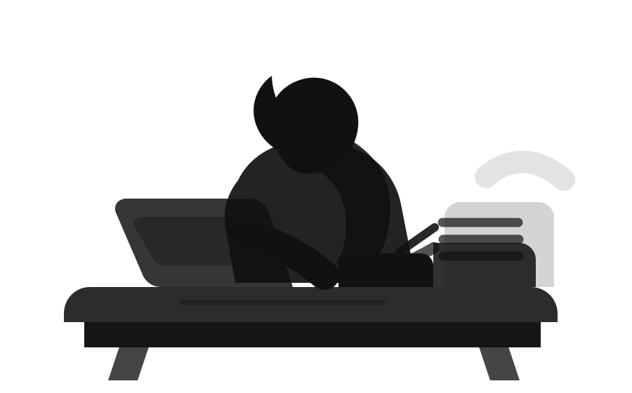

Find the subject
The test shows where the student has the best chance to build a serious Olympiad profile.
 WestBridge
WestBridge
Hong Kong Olympiad preparation
WestBridge helps ambitious students turn raw ability into competition results: clear subject choice, serious weekly training, and the kind of academic evidence top universities understand.
Built for proof
Parents should not have to decode the Olympiad world. We make the route simple enough to start, and demanding enough to matter.
The test shows where the student has the best chance to build a serious Olympiad profile.
Lessons, tests, homework, tutor correction, and parent updates stay inside one monthly programme.
The goal is visible proof: medals, stronger thinking, and a story universities can quickly understand.
Simple for parents
A strong programme should reduce confusion. The first decision is simple: let the student take the test, then receive a realistic placement recommendation.
We match the student's preferences with the subject where they can build the strongest Olympiad advantage.
The student joins a cohort that creates pressure, growth, and visible progress.
We map the route from current level to Hong Kong, regional, and international opportunities.
Monthly programme
This is the structure behind the results: clear teaching, weekly pressure, homework correction, and tutor feedback repeated until the student can perform under real Olympiad conditions.
2 lessons per week, 1 test per week, assigned homework, tutor feedback, and progress tracking.
View education structureIn the past 2 years, students trained through this same methodology and programme model produced these medal outcomes across international, republic, and state-level Olympiads.

Hard work becomes rare when it has to repeat tomorrow.
University signal
A medal is a rare, credible signal of depth, stamina, and academic seriousness. That is exactly why the Olympiad route matters.